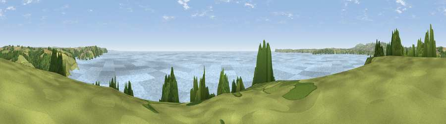

Viewpoint near Polruan
#19090 in England · top 34% of its area beats it · near PolruanThe view, rendered

A 360° render of this exact spot computed from the terrain model, tree cover and land cover — summer colours, afternoon light, calibrated against photographs of famous viewpoints. Real trees, hedges and buildings will differ in detail.
The panorama
Grey silhouette: terrain skyline in each direction (720 bearings, Earth curvature and refraction included). Dashed green: skyline with trees (+15 m) and buildings (+8 m) as obstacles. Blue strip: how far the ground is visible on each bearing.
Where the view opens
Wedge length = distance to the farthest visible ground on that bearing (vegetation-aware). Rings at 10, 25 and 50 km.
What fills the view
78% water · 10% grassland · 6% woodland · 5% cropland ·
Angular shares of the visible panorama (visual magnitude), not map area. Landscape diversity 0.34 (0–1 Shannon).
Key numbers
More beautiful places nearby
The staircase of upgrades: each row has a higher view potential than everything closer. Driving times are estimates from straight-line distance, calibrated against real road routing — check an actual route before setting out.
| Place | Direction | Drive | Score |
|---|---|---|---|
| Viewpoint near Polruan | NNW · 1 km | ~2 min | 69.2 |
| Viewpoint near Polruan | ENE · 4 km | ~9 min | 73.1 |
| Viewpoint near Polruan | ENE · 4 km | ~9 min | 77.5 |
| Viewpoint near Polruan | ENE · 5 km | ~11 min | 79.4 |
| Pencarrow Head | ENE · 6 km | ~12 min | 86.0 |
| Viewpoint near Stenalees | NW · 12 km | ~23 min | 88.0 |
| Viewpoint near Crackington Haven | N · 45 km | ~65 min | 88.1 |
| Viewpoint near Combe Martin | NNE · 110 km | ~135 min | 88.9 |
50.31670, -4.67333 · source: screening · position refined by local search. Computed location — check access rights before visiting.